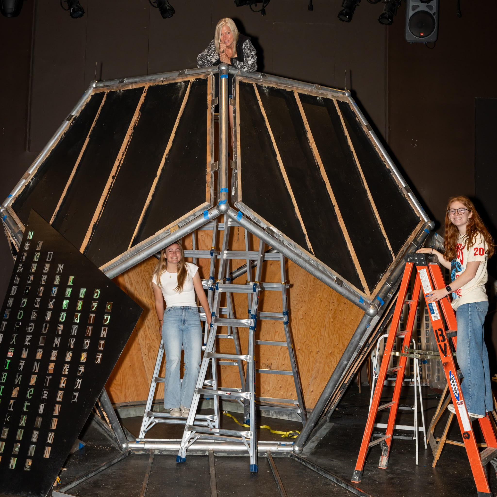

Designed and built a large-scale dodecahedron installation with Teensy-driven addressable LEDs, using a geometry-aware pipeline (Blender modeling, simulation tooling, and projection mapping) for synchronized real-time visuals.
Project Overview
The build combined mechanical fabrication with a software toolchain that maps animation content onto 12 pentagonal faces. Geometry from Blender was converted into LED index maps and streamed as timed frame buffers to an Arduino Teensy for live playback and parameter tuning on site.
Key Features
- Simulation-First Workflow: Custom tooling for rapid animation prototyping before hardware deployment.
- Geometry-Aware Mapping: Blender-derived facet coordinates converted to deterministic LED addressing.
- Controller Runtime: Teensy firmware streams time-based patterns for low-latency visual updates.
- Projection Alignment: Low-code projection pipeline keeps rendered content synchronized with physical faces.
Watch the Project in Action
Technical Details
Each facet was modeled as an independent logical panel, then compiled into contiguous pixel buffers with timing metadata for playback. This split made it easy to iterate on effects in software while preserving deterministic output behavior on embedded hardware during installation runs.